教育经历
大连海事大学 211双一流 2023.07 - 2026.06
轮机工程 硕士 轮机工程学院 均分: 89.67 / GPA: 3.90
主修课程：数值分析、高等工程热力学、现代控制理论、Ansys Fluent应用、船舶新能源技术、污染防控技术、硕士英语等
山东大学 985211双一流 2017.09 - 2021.06
数字媒体技术 学士 软件工程学院 均分: 80.58 / GPA: 3.95
主修课程：高级程序设计语言、数学建模、数据结构、计算机图形学、Web技术、机器学习、计算机组成原理、单片机原理及应用、计算机网络、人机交互技术、数字图像处理、最优化方法、算法设计与分析等
荣誉奖项
专业技能
专业软件：Comsol、LTspice、Origin、LabVIEW、Blender、Photoshop
编程语言：C/C++、Python
代表论文
第一作者
- Ma Z, Liu C, Lei K, et al. Triboelectric-Thermoelectric Nanogenerators Co-Design Strategy: A Self-Powered Sensing Method for Transmission Line Vibration Detection[J]. Advanced Materials Technologies, 2025,e00483.(IF=6.2, JCR: Q2, 中科院3区)
- Ma Z, Liu C, Wang Y, et al. A Hybrid Harvesting Method for Multiple Marine Renewable Energy Sources Based on Microthermoelectric Generator and Triboelectric Nanogenerator[J]. Advanced Engineering Materials,2024,26(22):2401486-2401486.(IF=3.3, JCR: Q2, 中科院3区)
- Hao Z, Ma Z, Liu C, et al. A joint sensing method for transmission line damage and sag based on triboelectric nanogenerator and deep learning[J]. Journal of Materials Science: Materials in Electronics,2024, 36, 733.(IF=2.8, JCR: Q2, 中科院4区, 共同一作)
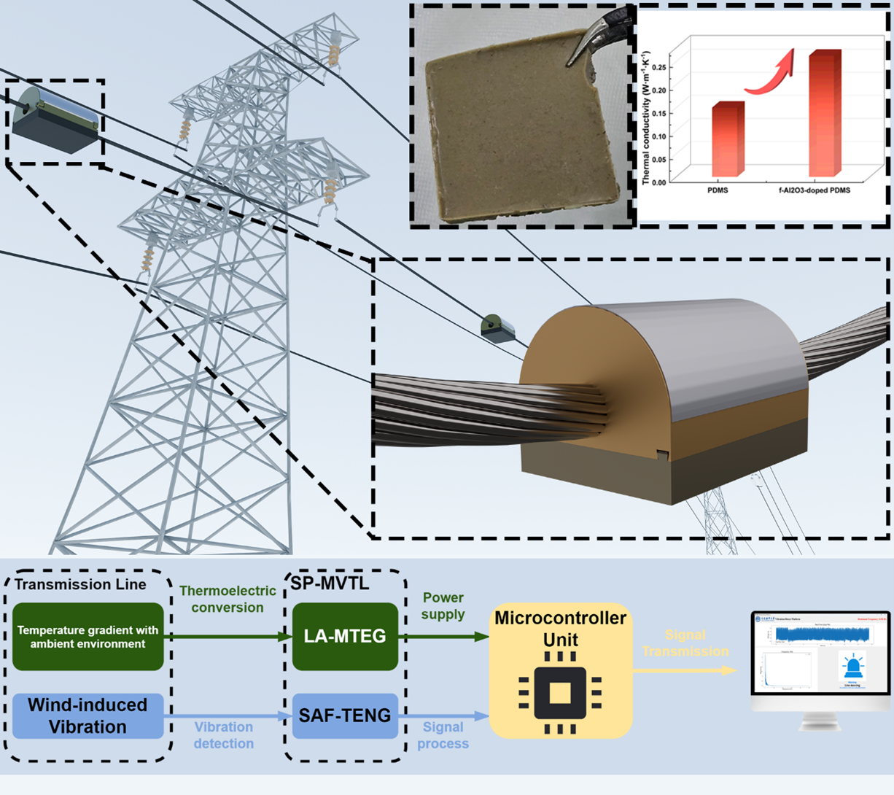
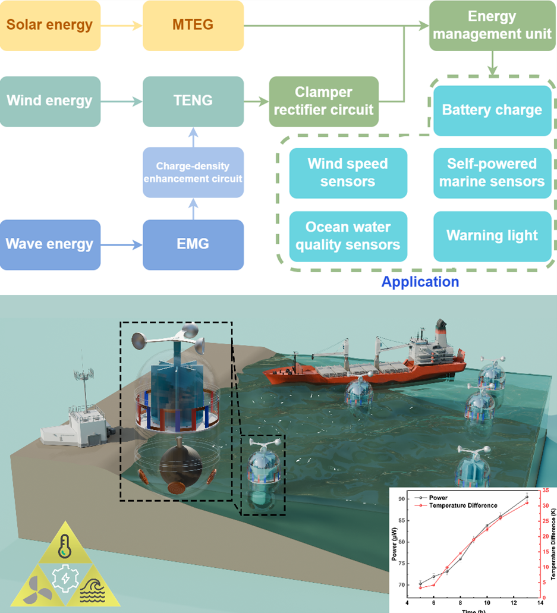
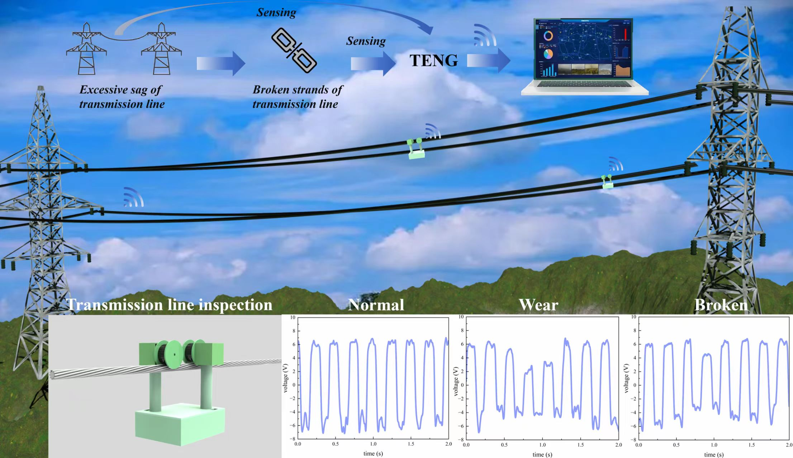
学生二作
- Hao Z, Liu C, Ma Z, et al. A Multi-Dimensional Sensing Method for Icing Thickness, Icing Shape, and Sag of Transmission Lines Based on Triboelectric Nanogenerator[J]. Advanced Materials Technologies, 2025, 10, 2401916.(IF=6.2, JCR: Q2, 中科院3区)
- Liu C, Shao T, Ma Z, et al. Human Energy Harvesting – A Flexible Bionic Composite MTEG-TENG Based on the Shared Substrate with Characteristic Doping[J]. Advanced Sustainable Systems, 2025, 9, 2500116.(IF=6.1, JCR: Q2, 中科院3区)
- Wang Y, Liu C, Ma Z, et al. A novel underwater multi-dimensional tactile and flow velocity perception method based on micro thermoelectric generator[J]. Flow Measurement and Instrumentation, 2025, 106102955-102955.(IF=2.7, JCR: Q2, 中科院3区)
其余顺序论文
- Liu C, Wang Y, Lu Y, Hao Z, Ma Z, et al. A Self-Powered Two-Dimensional Acceleration Sensing Method Based on Triboelectric Nanogenerators for Power Transmission Lines[J]. ACS Applied Electronic Materials, 2025;7(6):2362-72.
- Feng X, Hao Z, Shao T, Ma Z, et al. A hybrid energy harvesting approach for transmission lines based on triboelectric nanogenerator and micro thermoelectric generator[J]. Nanotechnology, 2024;35(34):345401.
- Hao Z, Liu C, Shao T, Ma Z, et al. Self‐Powered Vibration Frequency Monitoring Device for the Grid Based on Triboelectric Nanogenerator and Micro Thermoelectric Generator[J]. Advanced Sustainable Systems, 2024;8(7):2300561.
- Liu C, Shao T, Hao Z, Sui Z, Ma Z, et al. Hybrid human energy harvesting method of MTEG-TENG based on a flexible shared substrate[J]. Materials Today Sustainability, 2024;26:100692.
授权专利
一种复合材料碳纤维芯棒X射线图像缺陷提取方法及系统(已授权)
发明专利第二发明人/学生第一完成人
申请号：CN202110769321.8授权号：CN113592782B
摘要：本发明提供了一种复合材料碳纤维芯棒X射线图像缺陷提取方法及系统,基于二维经验模态分解和形态学方法,实现了X射线图像的缺陷特征快速提取和准确标注。
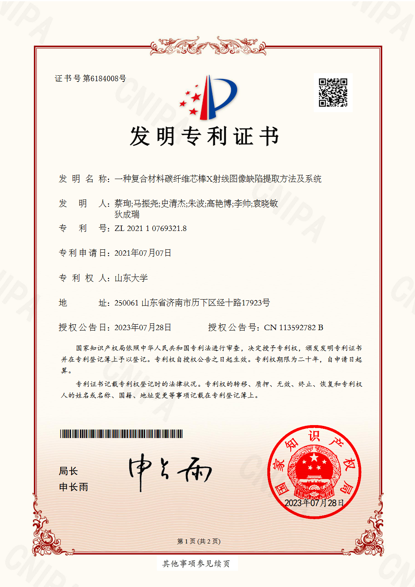
科研/项目经历
横向项目
输电线路柔性微传感技术研究及应用(南方电网)
研究内容：多频振动场景下摩擦纳米发电机(Triboelectric nanogenerator, TENG)机电耦合模型研究；微型温差发电机(Micro Thermoelectric generator, MTEG)在复杂温变环境中的热电转换技术研究；温-振协同感知与输电线路故障预警模型研究。
创新点：提出TENG-MTEG协同感知架构，实现输电线路振动/温度双模态监测；建立多参数耦合故障预警模型，支持早期隐患识别。
负责内容：项目可行性研究与整体方案撰写，实验台搭建，样机研制与性能测试，项目所需论文撰写等工作。
研究成果：发表SCI二区论文4篇[1,3,4,7]。
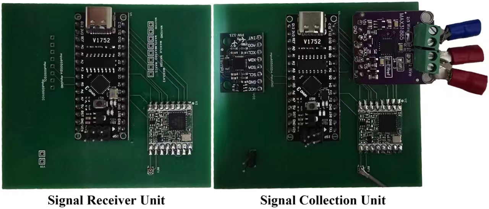
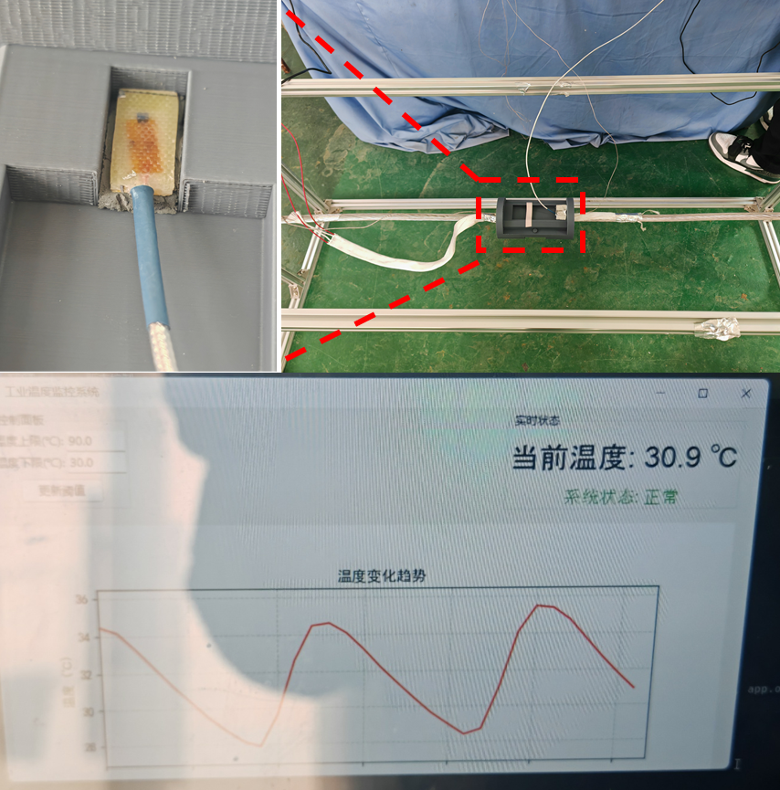
亲水性带电激光除冰装置关键技术研究及应用(南方电网)
研究内容：冰层与绝缘子对不同波长激光的吸收特性研究；水共振吸收型激光除冰发生器研究；激光带电除冰装置研制；现场示范应用。
创新点：首创水共振吸收型激光除冰发生器，降低绝缘子热灼伤风险；开发标准化激光带电除冰操作流程，提升作业安全性与效率。
负责内容：除冰装置研制与调试，标准化除冰作业流程制定，项目出差，多次赴现场开展示范应用与验收，撰写项目结题报告书等工作。
研究成果：形成标准化除冰作业操作流程，完成现场工程验证。
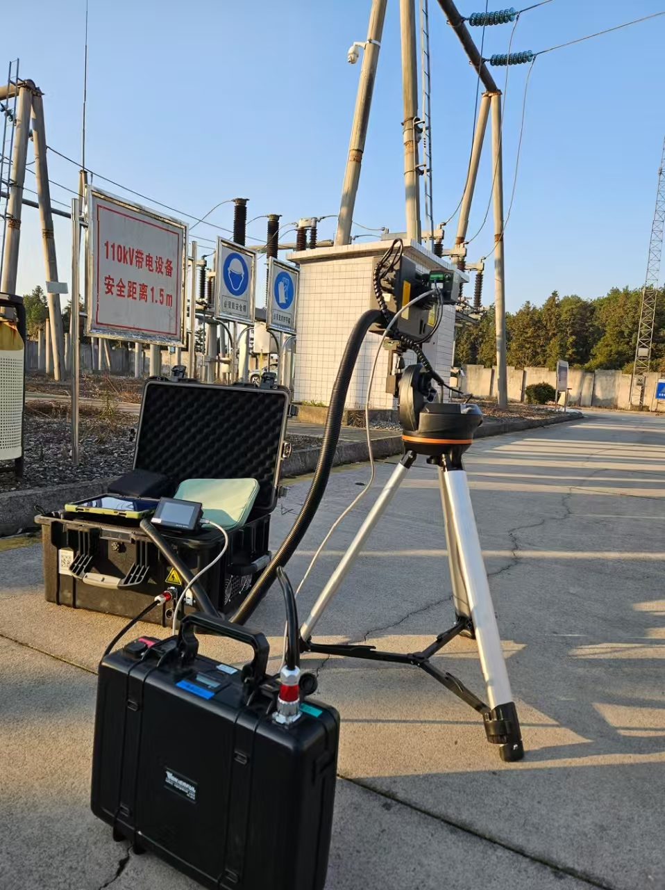
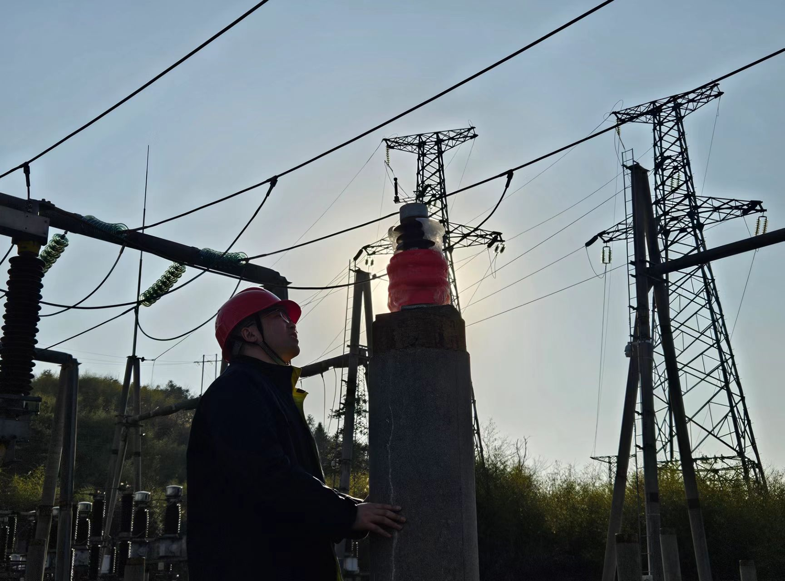
纵向项目
发电网络构建及海洋动力系统环境测试(国家重点研发课题)
研究内容：水波能纳米发电装置水动力建模与优化；纳米发电阵列优化研究；海洋环境适应性纳米发电网络设计；系统测试与性能验证。
创新点：提出拓扑结构优化方法，提升阵列发电效能与抗干扰能力；开发模块化防护技术，增强设备海洋环境适应性。
负责内容：原理样机设计、研制及测试，项目所需论文撰写等工作。
研究成果：发表SCI二区论文1篇[2]。
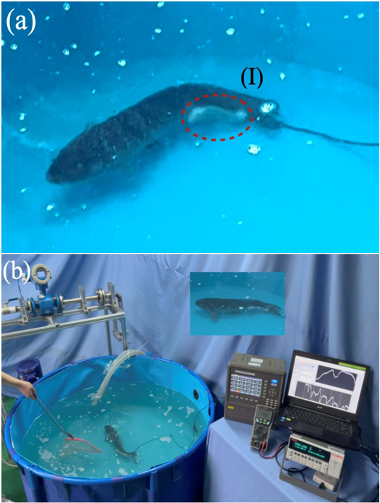
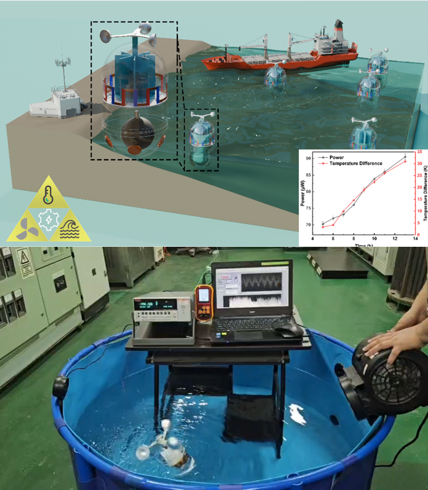
个人/开源项目
基于Python的信号处理与可视化工具开发
研究内容：开发全流程信号处理工具链，支持数据导入、预处理（基线校正、去噪滤波）、多维度时频分析（FFT/STFT/CWT）及可视化；集成NI-DAQmx接口，实现与硬件设备的实时数据采集与在线分析，推动实验自动化；采用模块化设计（Tkinter图形界面 + NumPy/SciPy算法核心），支持参数动态调整与结果实时交互。
创新点：替代传统LabVIEW平台，提升跨平台兼容性与开发灵活性；支持高度定制的数据处理流程与参数调整，并实现各阶段结果可视化，为信号处理提供实时反馈。
负责内容：系统架构设计与核心算法开发；图形界面实现与软硬件通信调试；使用文档撰写与实验室推广。
技术栈：Python (Tkinter, NumPy, SciPy, Matplotlib等), 数字信号处理(DSP), NI-DAQmx, Git
研究成果：工具已开源并在课题组内进行推广，显著提升了科研效率。目前该工具已经应用于三篇SCI论文的数据分析与处理工作[1,3,5]。
Github开源地址：https://github.com/waytohill/TENG-data-processor
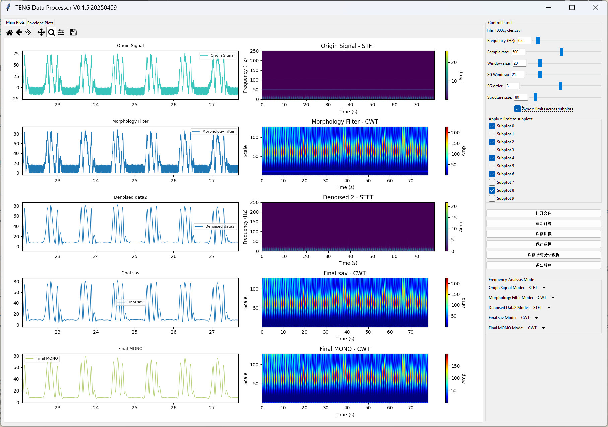
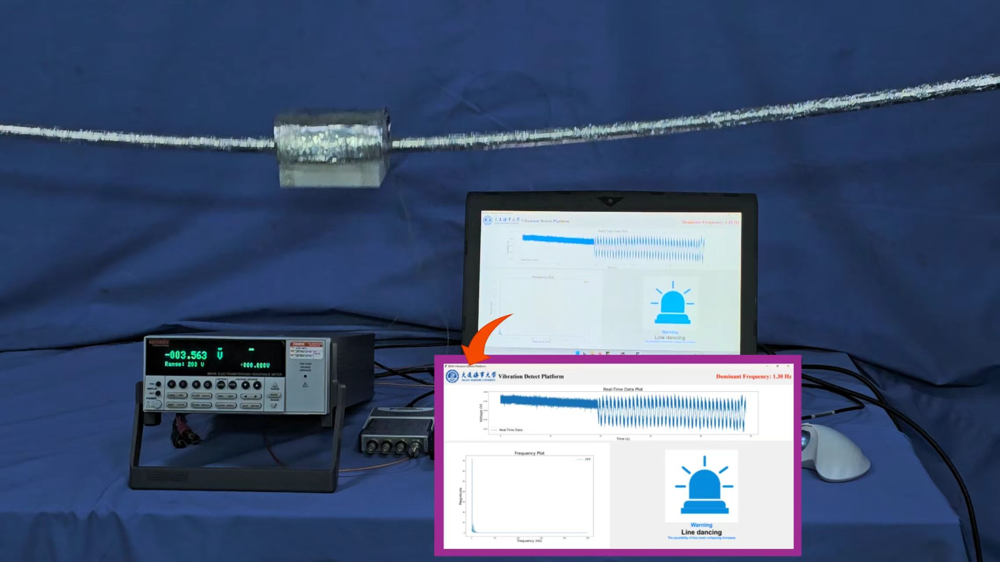
参与项目申请
- 国自然 小温差海洋条件下的MTEG-TENG流-机-热-电转换机理研究
- 南方电网 德宏供电局 | 输电线路柔性微传感技术研究及应用
- 南方电网 昆明供电局 | 非接触远距离新型传感技术研究及装备试制
- 南方电网 红河供电局 | 带电作业试验研究及设备试制
- 南方电网 云南电科院 | 输电线路涉害鸟群动态监测技术研究及鸟害综合评估预警系统试制